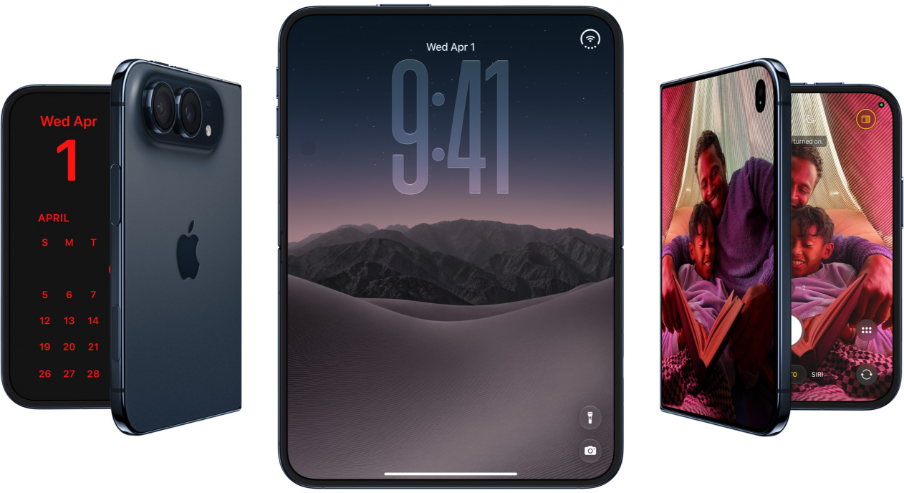
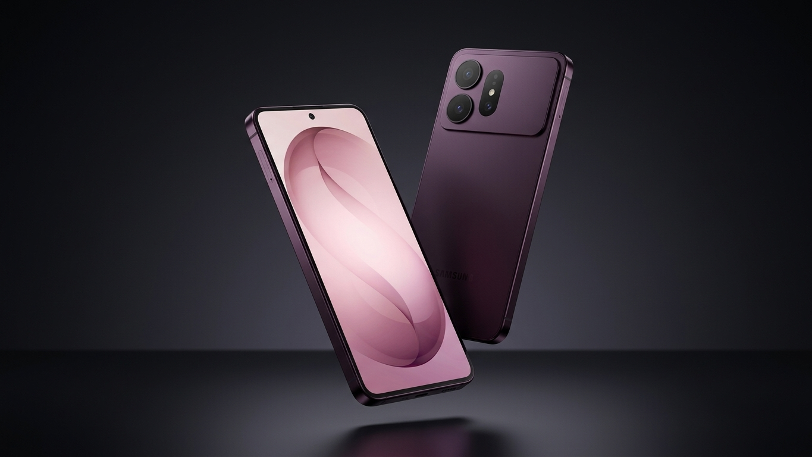

Xiaomi Libera novidades sobre a HyperOS 4
Publicado em 28 de setembro de 2026

A Xiaomi anunciou recentemente a chegada da HyperOS 4, a nova versão de seu sistema operacional. A atualização traz uma série de melhorias e recursos inovadores, incluindo uma interface mais intuitiva e suporte aprimorado para dispositivos de última geração.
Leia mais
Iphone Duo, primeiro dobrável da apple
Publicado em 24 de setembro de 2026

A Apple anunciou recentemente o lançamento do Iphone Duo, seu primeiro smartphone dobrável. O dispositivo apresenta um design inovador, permitindo que os usuários desfrutem de uma tela maior quando necessário, enquanto mantém a portabilidade de um smartphone tradicional.
Leia mais
Vazamentos do novo Galaxy S27 ultra
Publicado em 20 de setembro de 2026

O Samsung está preparando o lançamento do Galaxy S27 ultra, seu mais recente smartphone da linha premium. O dispositivo promete trazer avanços significativos em termos de desempenho, câmera e design.
Leia mais